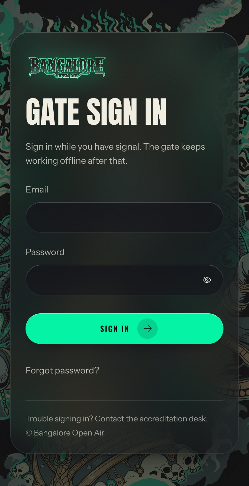
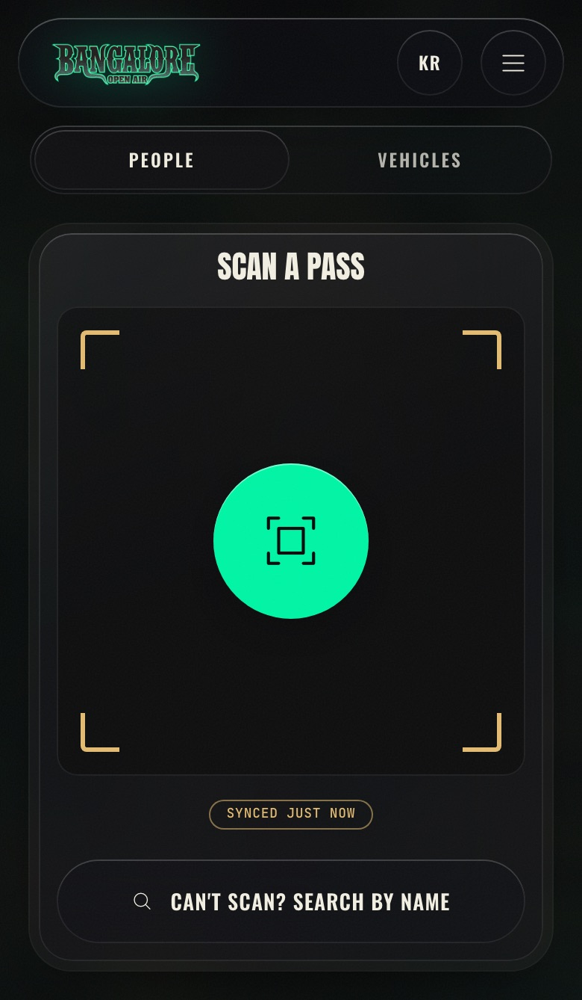
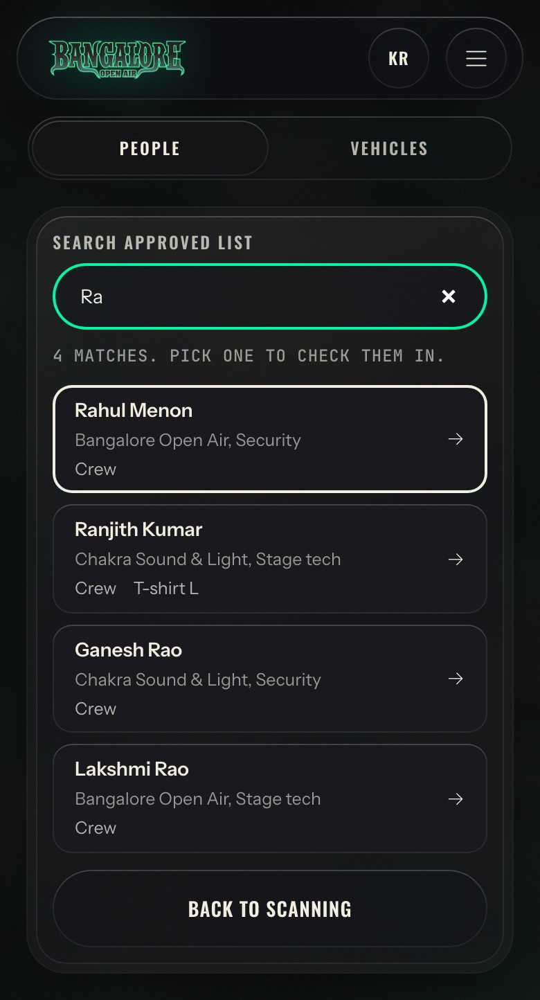
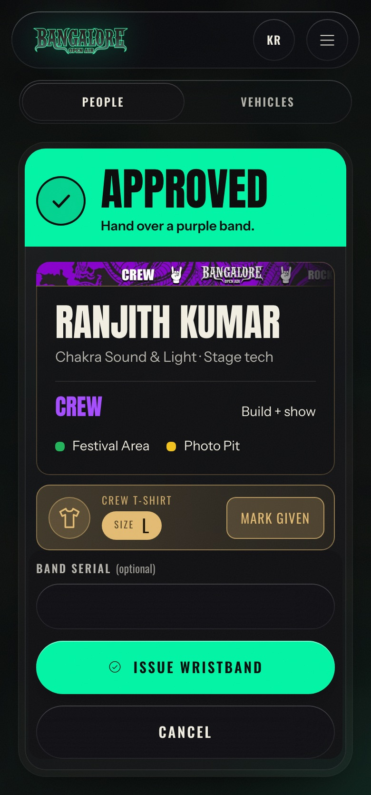
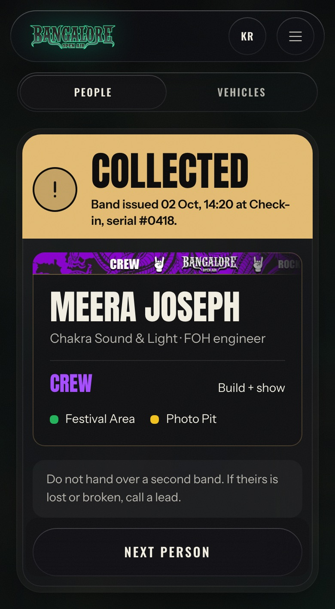
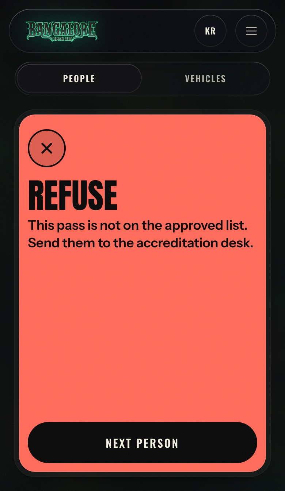
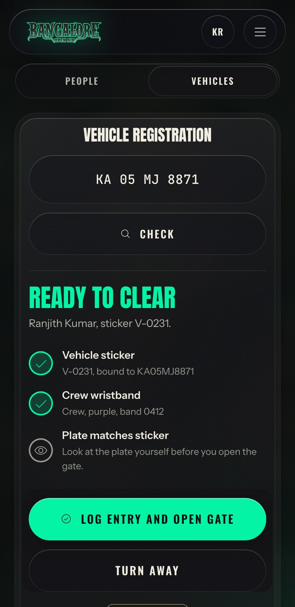

Issuer guide · BOA 2026
You check each person against the approved list and hand over their wristband. The app tells you what to do. This is the short version.
Open the invite email and set your password. The account is yours alone.
On your own phone, with signal, go to accred.bangaloreopenair.com/gate and sign in.
Wait for Synced just now under the camera. The approved list is now on your phone.
Tap the green camera button and allow the camera.

Scan the pass on their phone. Won't scan? Tap Can't scan? Search by name and type their name or the last 4 digits of their phone.
Check their photo ID matches the name on screen.
Do what the screen says.





Crew T-shirt. If the card shows a T-shirt size, as on Approved above, hand over a shirt in that size and tap Mark given.
Tap Vehicles at the top.
Type the plate and tap Check.
The vehicle needs a sticker and a driver with a wristband. Look at the plate yourself.
Log entry and open gate, or Turn away and pick a reason.
